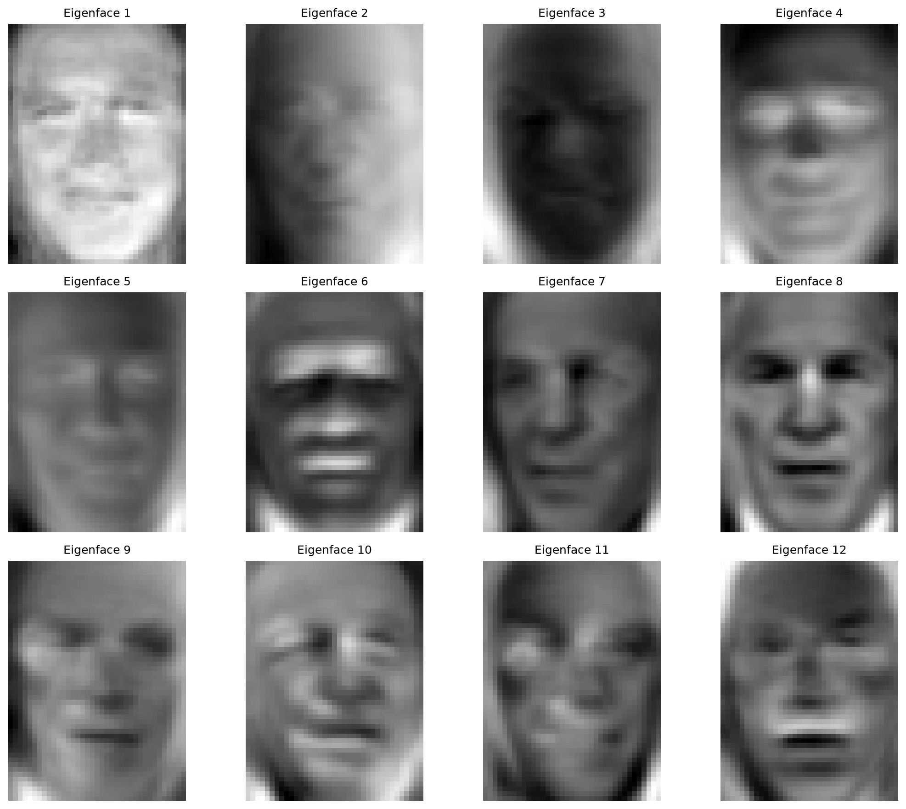
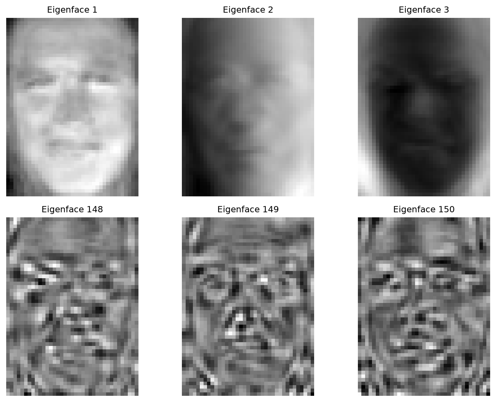

CSST106 · COMPUTER VISION AND PERCEPTION · WEEKS 7–8
Laboratory Activity 5 Principal Component Analysis in Computer Vision
Experiment: Facial Recognition using Principal Component Analysis (Eigenfaces) Module: Dimensionality Reduction and Feature Extraction First Semester · Academic Year 2026–2027
This activity reduces face images to eigenface coordinates and uses a support vector machine to recognize seven known identities. The experiment retains approximately 94.56% of training variance with 150 components and achieves 84.88% accuracy on 258 held-out images.
Objectives
Load, flatten, and preprocess high-dimensional image data.
Apply PCA to extract the most significant variation as eigenfaces.
Quantify the component count and cumulative variance trade-off.
Recognize individuals using an SVM on reduced PCA projections.
Methods and task results
Task 1 Data acquisition and preprocessing
LFW was loaded with min_faces_per_person=70, resize=0.4. There are 1,288 grayscale images, each 50 × 37 pixels (1,850 features), across seven identities. The split uses test_size=0.2, random_state=42: 1,030 training images and 258 test images. X has shape (1288, 1850) and y has shape (1288,).
Task 2 Principal components
PCA uses 150 components, randomized SVD, whitening, and an added random seed of 42 for reproducibility. It is fitted only on training images. The transformed training and test shapes are (1030, 150) and (258, 150). An independent full-SVD PCA checks the variance threshold.
Task 3 Eigenface visualization
The 150 eigenvectors are reshaped to (150, 50, 37). The first 12 components are shown below. Each is displayed with its own grayscale contrast range.

Figure 1. Genuine eigenfaces generated by the completed Python script.
Task 4 Recognition using an SVM
An SVC(kernel='rbf', class_weight='balanced') with default C=1 and gamma='scale' is fitted to the 150 whitened training weights. It correctly predicts 219 of 258 test images, an accuracy of 84.88%, with 39 incorrect predictions.
Held-out test classification report
Identity
Precision
Recall
F1
Support
Ariel Sharon
1.00
0.64
0.78
11
Colin Powell
0.63
0.96
0.76
47
Donald Rumsfeld
0.83
0.68
0.75
22
George W Bush
0.94
0.91
0.92
119
Gerhard Schroeder
0.89
0.89
0.89
19
Hugo Chavez
1.00
0.46
0.63
13
Tony Blair
0.95
0.78
0.86
27
Macro average
0.89
0.76
0.80
258
Weighted average
0.88
0.85
0.85
258
Analysis figures
Figure 2. Exact variance is 89.8876% at 84 components and 90.0017% at 85 components.

Figure 3. Broad early patterns versus finer late patterns in the retained 150-component set.Figure 4. Incorrect predictions extracted programmatically from the held-out test set.
Post laboratory analysis
1. How many components retain 90% of the variance?
85 components are required with the handout’s training split: 84 retain 89.8876% and 85 retain 90.0017%. The 150-component model retains about 94.56%. The interactive variance graph uses the same training data and displays the required cumulative explained variance alongside an exact full-SVD check. These figures measure variance, not recognition accuracy.
2. What do the first three and last three eigenfaces capture?
Eigenface 1 emphasizes broad facial structure and overall facial contrast. Eigenface 2 shows a strong left-to-right brightness gradient, consistent with lighting-direction variation. Eigenface 3 contrasts the center of the face with outer regions, suggesting facial shading and outline changes. Eigenfaces 148–150 show finer fragmented patterns around features, with much lower individual variance; these may include subtle detail, alignment differences, and noise. Each component can mix several effects. Use Task 3’s comparison view to inspect the actual patterns.
3. What does whitening do, and why does it help an SVM?
For component j, whitening computes zⱼ = ((x − μ) · vⱼ) / √λⱼ, where λⱼ is the component’s training variance (singular value squared divided by n_train − 1). It gives the retained training projections unit sample variance and approximately zero cross-covariance. An RBF SVM uses squared Euclidean distance, so whitening prevents high-variance directions from dominating distance. This can improve prediction, although it can also amplify low-variance noise and does not guarantee better accuracy. Scikit-learn PCA documentation ↗
4. Why did the eigenface approach fail on specific images?
The Python run made 39 errors. At test index 13, Tony Blair was predicted as George W Bush: head tilt and an open mouth may shift facial patterns. At index 21, Donald Rumsfeld was predicted as George W Bush: glasses and a broad smile may alter eye and mouth features. At index 31, George W Bush was predicted as Colin Powell: uneven lighting and forehead/eye shadows may obscure identity-related detail. These image-based hypotheses reflect PCA’s sensitivity to global appearance, rather than proving the cause of each error. The program extracts failures using np.flatnonzero(y_pred != y_test).
Follow up questions
1. Why is dimensionality reduction important in computer vision?
It reduces computation, memory use, and redundant features. Keeping informative components can also reduce noise and overfitting, while making high-dimensional image data easier to model and visualize.
2. How do the first and second principal components differ?
The first captures the greatest variance. The second captures the greatest remaining variance while being orthogonal to the first. Their training projections are uncorrelated.
3. What might be lost when 1,000 features become 100 components?
Variation along the discarded directions is lost. This can include fine texture, subtle edges, small facial details, and noise. Retaining 100 out of 1,000 components does not mean retaining only 10% of the information; the retained variance depends on the data.
4. How can PCA be applied to face recognition?
Resize and align face images consistently, flatten them, learn the training mean and eigenfaces, and project faces onto the retained components. Train a classifier on those weights to predict the known identities. Apply the same training mean and PCA transformation to held-out images.
5. Why should image features be centered before PCA?
Subtracting each pixel’s training mean makes PCA describe variation around the mean face. Without centering, the common offset can dominate the decomposition. Scikit-learn PCA centers features automatically; it does not standardize the original pixels to unit variance.
Conclusion
PCA compressed 1,850 pixel features into 150 coordinates while retaining approximately 94.56% of training variance. Eighty-five components were sufficient for 90%. The balanced RBF SVM achieved 84.88% held-out accuracy. Failure examples show that pose, expression, glasses, and lighting can change the global appearance modeled by eigenfaces. Retaining high variance does not automatically preserve all identity-discriminating information.
Sources and reproducibility
Primary handout: CSST106_Lab_Experiment_05_PCA_in_CV.docx. Python source: python/lab5_pca.py. Fixed model, training/test indices, array hashes, library versions, and predictions: assets/data/manifest.json. Dataset: Labeled Faces in the Wild, through scikit-learn. PCA reference: https://scikit-learn.org/stable/modules/generated/sklearn.decomposition.PCA.html.